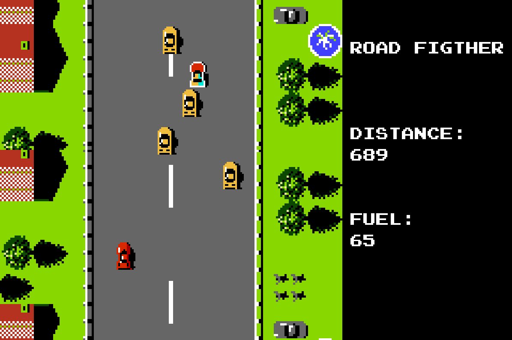
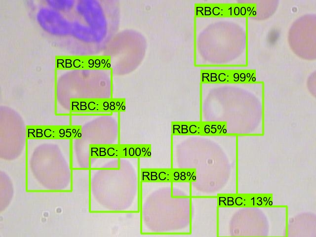

locator-pet
Desenvolvimento de um website com Django (Python) com o intuito de localizar animais perdidos. Através
do sistema é possível criar posts que ficarão disponíveis para outros usuários visualizarem e entrarem
em contato caso tenham alguma informação relevante. O sistema possui autenticação, internacionalização e
utiliza a maioria dos recursos disponíveis do Django.

road-fighter
Desenvolvimento de um jogo com PyGame (Python). A ideia consiste em ser uma versão endless do jogo, ou
seja, infinito. O projeto está jogável e todo o código fonte se encontra disponível, assim como um
executável compilado para aqueles que não queiram executar pelo Python. Todos os sprites foram
desenhados no Photoshop com base nos sprites originais.

blood-detection
Treinamento de um modelo de Deep Learning para detecção de células sanguíneas em imagens através do uso
do Object Detection do Tensorflow. O modelo permite classficar as células em células vermelhas, células
brancas e plaquetas. O projeto foi desenvolvido para o meu TCC e além do modelo, também foi criado um
protótipo com Streamlit.

delivery-api
Este é um projeto de API REST desenvolvida em Flask (Python). Com esta API, é possível criar e gerenciar
produtos, pedidos e usuários em um sistema de
delivery. Além disso, o projeto conta com testes automatizados utilizando a biblioteca unittest e pode
ser implementado via docker para garantir a facilidade de instalação e execução em
diferentes ambientes.

conexao-postgres
Este é um código em Python que cria uma classe Banco para se conectar a um banco de dados PostgreSQL
usando a biblioteca psycopg2. A classe possui métodos para selecionar dados (selecionar e selecionarUm)
e executar comandos (executar) no banco de dados, além de métodos para abrir e fechar a conexão com o
banco (abrirConexao e fecharConexao, respectivamente).

fundos-imobiliarios
Este projeto é uma ferramenta de coleta e análise de dados de fundos imobiliários (FIIs) no Brasil. Para
isso, são coletadas informações sobre FIIs no FundsExplorer, onde essas informações são formatadas como
código, setor, preço, rentabilidade, etc. Também são armazenadas em um banco de dados PostgreSQL para
posteriormente gerar rankings e ratings de FIIs.

ifmoradas
Desenvolvimento de um website com Django (Python) com o intuito de oferecer opções de moradias para
estudantes do IFSC. Através do sistema é possível criar e procurar imóveis que estão disponíveis e
entrar em contato caso tenham interesse. O sistema foi desenvolvido como principal trabalho da
disciplina de Tópicos Especiais em Programação para o curso de
Sistemas de Informação do IFSC Caçador.

mercatop
Um sistema de supermercado online que permite a compra de produtos sem sair de casa. Os
administradores do sistema também terão uma interface própria voltada ao gerenciamento de produtos,
vendas, clientes e cidades envolvidas. Criado em Laravel (PHP), o sistema conta com várias
funcionalidades de segurança e autenticação, forncecendo um ambiente completo e pronto para uso.

cryptocoins-website
Este é um projeto desenvolvido em React com NextJS para acompanhar as variações das criptomoedas e
compará-las com seus valores em reais. As criptomoedas abordadas pelo projeto são Bitcoin, Bitcoin Cash,
Ethereum, Litecoin, Moss Carbon Credit e Chainlink. Os valores são atualizados e convertidos em tempo
real através da API do Mercado Bitcoin.

game-of-life
Desenvolvimento de um Game of Life utilizando apenas as regras como base. No jogo, é
possível desenhar com o mouse, assim como iniciar/parar o ciclo e avançar manualmente cada ciclo.
Construido totalmente em HTML/CSS e utilizando Javascript para construir a lógica do programa e a
execução dos ciclos.

tabnews-clone
O propósito deste repositório é através do curso.dev realizar o desenvolvimento e implementação de todo
o sistema do Tabnews original do zero. Através do curso que está em produção pelo Filipe Deschamps,
estou acompanhando as aulas para aprender como elaborar sistemas com o uso de NextJS e React.

veja-mais
Nessa página de projetos, gosto de expor meus desenvolvimentos mais atuais e criativos. Em meu
Github, também tenho outros projetos que desenvolvi em outras linguagens e templates que utilizo
bastante. Venha me visitar no Github.